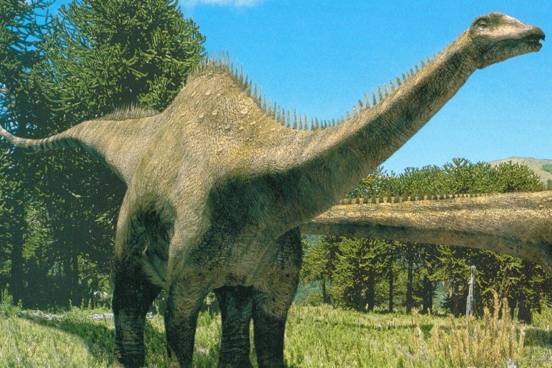
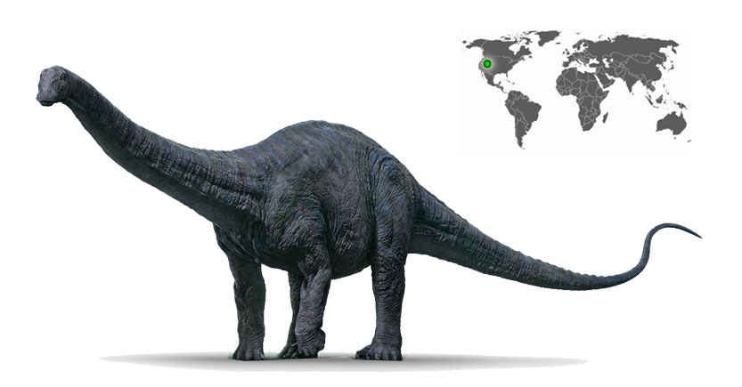
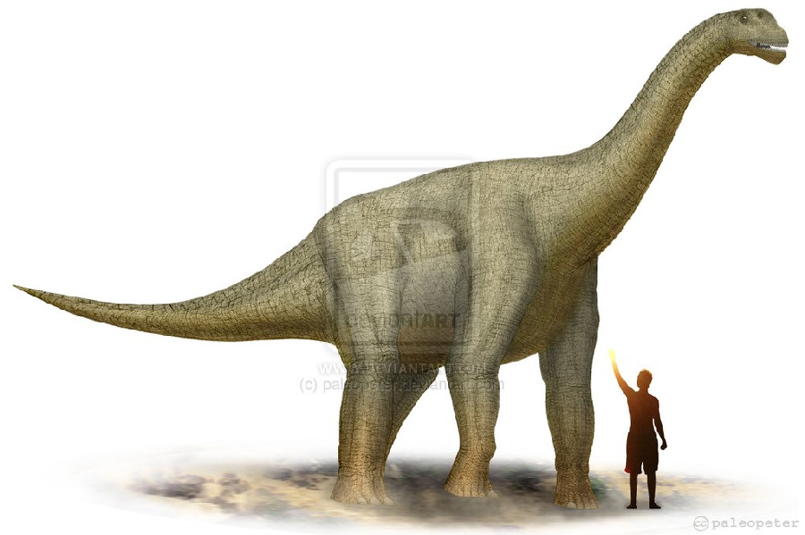

DINOSAURIOS



Diplodocus, también castellanizado diplodoco, es un género con tres especies conocidas de dinosaurios saurópodos diplodócidos, que vivieron a finales del período Jurásico, hace aproximadamente entre 155,7 y 145 millones de años, en el Kimmeridgiense y el Titoniense, en lo que hoy es Norteamérica.1 Los primeros fósiles fueron descubiertos en 1877 por S. W. Williston.
Vivió en lo que es hoy el oeste de Norteamérica durante el período Jurásico Superior. El Diplodocus es uno de los dinosaurios más comunes de la parte superior de la Formación Morrison, una secuencia de sedimentos marinos y aluvionales depositados hace aproximadamente 152 millones de años. La Formación Morrison muestra un ambiente dominado por gigantescos saurópodos como Camarasaurus, Barosaurus, Apatosaurus y Brachiosaurus, además del Diplodocus.
El Diplodocus está entre los dinosaurios más fácilmente identificables, con su forma clásica, cuello y cola largos, y cuatro patas robustas. Durante muchos años, era el dinosaurio más grande conocido. Su gran tamaño pudo haber sido un impedimento para los depredadores Allosaurus y Ceratosaurus, cuyos restos se han encontrado en los mismos estratos, lo que sugiere que coexistieron con el Diplodocus.
Los Diplodocus están entre los dinosaurios mejor conocidos. Fueron animales cuadrúpedos muy grandes, de cuello largo y con una extensa cola en forma de látigo. Sus miembros delanteros eran ligeramente más cortos que los traseros, lo que configura una postura predominantemente horizontal. La mecánica de estos animales de cola y cuello largos, con cuatro patas macizas, ha sido comparada con la de un puente colgante.5 El espécimen tipo de Diplodocus carnegii, CM 84, es el más completo hallado de su género, estimado en alrededor de 25 metros de largo6 y 6.5 m de alto al cuello.7 58 Para la especie de D. carnegii, conocido por restos muy bien preservados. las estimaciones de su masa se sitúan en el rango de 11,5 a 19,7 toneladas con los siguientes valores según los autores 11.5 toneladas,9 12.7 toneladas,10 16 toneladas,11 y 19,7 toneladas.12 Las estimaciones de masa modernas para Diplodocus carnegii tienden a estar en el rango de 10 a 16 toneladas. Aunque dinosaurios como el Supersaurus eran probablemente más largos, los restos fósiles hallados de estas otras especies son sólo parciales.
Los restos parciales de D. hallorum han aumentado la longitud estimada del género, aunque no tanto como se pensó previamente. Cuando fue descrito en 1991, el descubridor, David Gillete, calculó que pudo haber medido hasta 52 metros de largo, haciéndole el dinosaurio más largo conocido, excepto los dudosos dinosaurios pobremente conocidos como Amphicoelias. Algunas estimaciones del peso se extendieron tanto como hasta 113 toneladas. La longitud estimada inicial fue posteriormente revisada a la baja a 33,5 metros y luego a 32 metros.1819 Una revisión más reciente demuestra que las vértebras gigantes de la cola estaban colocadas realmente más adelante en la cola que lo que D. Gillete las había ubicado originalmente. Gillette había colocado originalmente las vértebras 12-19 como vértebras 20-27. El estudio demuestra que el esqueleto completo del Diplodocus en el Museo Carnegie de Historia Natural de Pittsburgh, Pensilvania, en el cual las estimaciones de Diplodocus (Seismosaurus) hallorum se basaron, incluía la decimotercera vértebra de la cola perteneciente a otro animal, lo cual redujo las estimaciones del tamaño de D. hallorum en alrededor del 30 %, quedando en aproximadamente 32 metros de largo y 25-30 toneladas.6
Recientes descubrimientos han demostrado que los Diplodocus y otros diplodócidos pudieron haber tenido unas estrechas y puntiagudas espinas de queratina alrededor del dorso, como las de una iguana, de hasta 18 centímetros de alto en su cola y posiblemente a lo largo de la espalda y el cuello también, como en los hadrosauridos.3031 Esta característica, radicalmente diferente de la imagen que se tenía de estos animales, ha sido incorporada en recientes reconstrucciones, como en Walking with Dinosaurs.32 La descripción original de las espinas informó que los especímenes en la Cantera Howe cerca de Shell, Wyoming estaban asociados con restos óseos de un diplodócido no descrito "parecido a Diplodocus y Barosaurus. 30 Desde entonces, los especímenes de esta cantera han sido referidos a Kaatedocus siberi y Barosaurus.
| |
 |
 |
| |
|
|